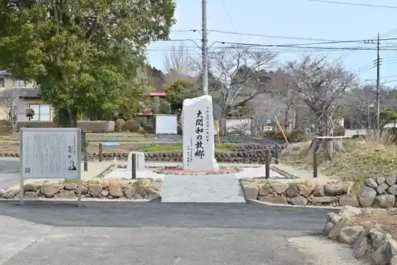
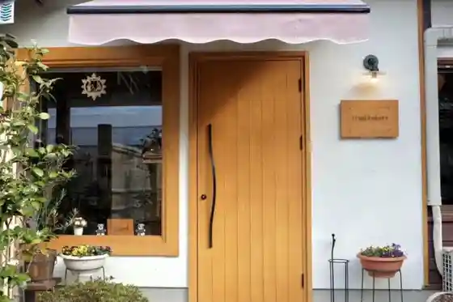
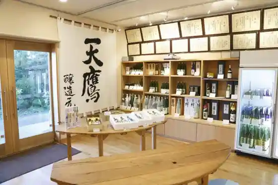
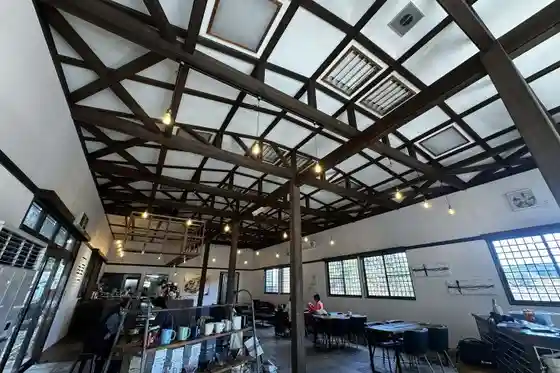

Kuroba Castle Park
Otawara, Tochigi · 0287-54-1110 · Official / source link
Ozeki Kazuki Nen Hi
Otawara, Tochigi · 0287-54-1110 · Official / source link

trump bakery
Otawara, Tochigi · 0287-54-3930 · Official / source link

Ten Taka Shuzo
Otawara, Tochigi · 0287-98-2107 · Official / source link

Hitsuji Kohii Taiyu Tera Mise
Otawara, Tochigi · Official / source link

hikari no cafe Hachisu Sho Kohii Mise
Otawara, Tochigi · 0287-54-2255 · Official / source link
Otawara Onsen Hotel Ryujo En
Otawara, Tochigi · 0287-24-2525 · Official / source link
Hikari Maruyama Horin Tera
Otawara, Tochigi · 0287-98-2606 · Official / source link
Kuroba Kanko Yana
Otawara, Tochigi · 0287-54-0087 · Official / source link
Hotel Tama no
Otawara, Tochigi · 0287-29-1799 · Official / source link
Men Ie Yukino Niwatori
Otawara, Tochigi · 0287-33-9198 · Official / source link
Tochigiken Nakagawa Mizu Yuen
Otawara, Tochigi · 0287-98-3055 · Official / source link
Yoichi Te Tsukuri Miso Kyoshitsu
Otawara, Tochigi · 0287-23-1221 · Official / source link
Kurosawa Jidosha / Taki Kanko
Otawara, Tochigi · 0287-54-3231 · Official / source link
Nasu Kuroba Gorufu Club
Otawara, Tochigi · 0287-54-2131 · Official / source link
Yashiro Main Shop
Otawara, Tochigi · 0287-54-0223 · Official / source link
Taiyu Tera
Otawara, Tochigi · 0287-54-0332 · Official / source link
Otawara Kanko Koryu Center
Otawara, Tochigi · 0287-54-1110 · Official / source link
Otawara Kuroba Basho no Kan
Otawara, Tochigi · 0287-54-4151 · Official / source link
Hoshida Ya Saketen
Otawara, Tochigi · 0287-54-0175 · Official / source link
Fuji Botan Sono
Otawara, Tochigi · 0287-98-3815 · Official / source link
Nasu Supotsu Park
Otawara, Tochigi · 0287-98-2811 · Official / source link
Otawara Nasu Fudoki no Oka Yuzukami Museum
Otawara, Tochigi · 0287-98-3322 · Official / source link
Tochigiken Nakagawa Mizu Yuen Mizu no Plaza
Otawara, Tochigi · 0287-98-3055 · Official / source link
Tochigiken Nakagawa Mizu Yuen Tsuri Ike
Otawara, Tochigi · 0287-98-3055 · Official / source link
Abe Koji Mise
Otawara, Tochigi · 0287-98-2456 · Official / source link
Nasu Kuninomiyatsuko Hi
Otawara, Tochigi · 0287-98-2501 · Official / source link
Chugokuryori Oryu
Otawara, Tochigi · 0287-22-2801 · Official / source link
Oka Han
Otawara, Tochigi · 0287-22-2474 · Official / source link
Okan Boru
Otawara, Tochigi · 0287-23-4160 · Official / source link
Chikko Gei no Mise Mushin Iori
Otawara, Tochigi · 0287-22-5200 · Official / source link
Haruchonramen Harutsu Ko
Otawara, Tochigi · 0287-23-2129 · Official / source link
Guriin Tsurizumu (KK Otawara Tsurizumu)
Otawara, Tochigi · 0287-47-6759 · Official / source link
Otawara Fureai no Oka Nature Kansatsu Kan
Otawara, Tochigi · 0287-28-3251 · Official / source link
Otawara Fureai no Oka Tenmonkan
Otawara, Tochigi · 0287-28-3254 · Official / source link
Chugokuryori Hana
Otawara, Tochigi · 0287-22-4466 · Official / source link
Roadside Station Nasu Yoichi no Sato
Otawara, Tochigi · 0287-23-8641 · Official / source link
Nasunogahara Kantorii Club
Otawara, Tochigi · 0287-23-1101 · Official / source link
Nasu Yoichi Densho Kan
Otawara, Tochigi · 0287-20-0220 · Official / source link
Kamakura
Otawara, Tochigi · 0287-54-0150 · Official / source link
Kurashi no Kan (Kuroba Furusato Bussan Center)
Otawara, Tochigi · 0287-54-3152 · Official / source link
Poppo Farm
Otawara, Tochigi · 0287-54-4368 · Official / source link
Isogami no Yamazakura
Otawara, Tochigi · 0287-54-1110 · Official / source link
Haneda Numa no Hakucho
Otawara, Tochigi · 0287-54-1110 · Official / source link
Tamamo Inari Shrine
Otawara, Tochigi · 0287-54-1110 · Official / source link
O Tei Yama
Otawara, Tochigi · 0287-23-8012 · Official / source link
Samurai Tsuka Burial Mound
Otawara, Tochigi · 0287-23-3135 · Official / source link
Saikyo Tera
Otawara, Tochigi · 0287-54-0649 · Official / source link
Otawara Folk History Museum
Otawara, Tochigi · 0287-98-2151 · Official / source link
Sabo Shiroyama
Otawara, Tochigi · 0287-54-4528 · Official / source link
Yuyu Kyabin & Campground
Otawara, Tochigi · 0287-98-2141 · Official / source link
Nasu Shrine
Otawara, Tochigi · 0287-22-3281 · Official / source link
Ajidokoro Yuzukami
Otawara, Tochigi · 0287-98-3055 · Official / source link
Ryujo Park (Otawara Castle Ruins)
Otawara, Tochigi · 0287-54-1110 · Official / source link
Ryu Nen Tera no Shidarezakura
Otawara, Tochigi · 0287-23-3135 · Official / source link
Hotel Kagetsu
Otawara, Tochigi · 0287-54-1105 · Official / source link
Painzu Onsen Hotel Otawara
Otawara, Tochigi · 0287-20-0811 · Official / source link
Hotel Aoki
Otawara, Tochigi · 0287-23-8100 · Official / source link
Otawara Sogo Koryu Taminaru Center Kuroba Onsen Goho Baths
Otawara, Tochigi · 0287-59-7010 · Official / source link
Nasunogahara Berubyu Hotel / Higaeri Onsen Tamamo Baths
Otawara, Tochigi · 0287-23-1100 · Official / source link
Yuzukami Onsen Yasuragi Baths (Higaeri Onsen)
Otawara, Tochigi · 0287-98-2141 · Official / source link
Nasunogahara Onsen (Higaeri Onsen)
Otawara, Tochigi · 0287-23-8100 · Official / source link